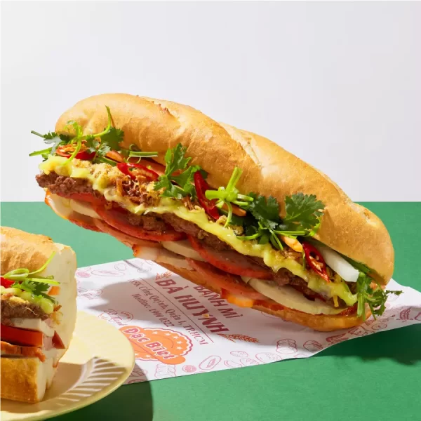
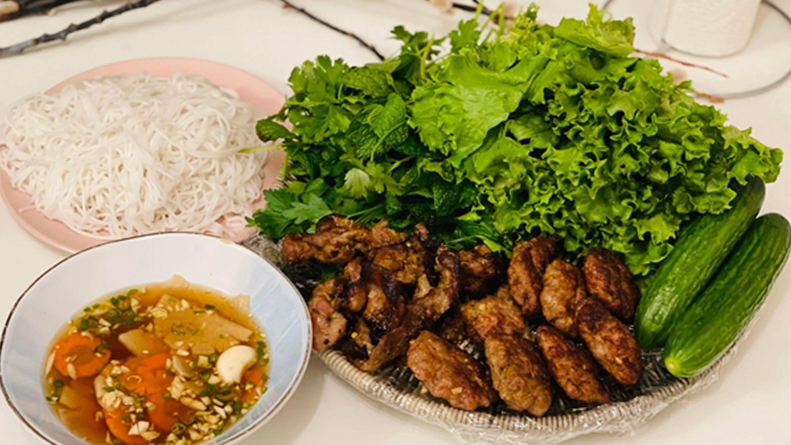
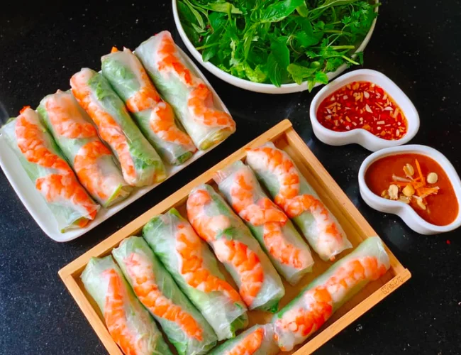

About Vietnam
Vietnam is a Southeast Asian country known for its beaches, rivers, pagodas, and bustling cities. From the vibrant streets of Hanoi to the tranquil waters of Ha Long Bay, Vietnam offers a diverse range of experiences for every traveler.
With a rich history and a culture that blends ancient traditions with modern influences, Vietnam is a destination that never fails to captivate.
Top Attractions
-
Ha Long Bay
A UNESCO World Heritage Site, Ha Long Bay is famous for its emerald waters and thousands of towering limestone islands topped with rainforests.
More information about Ha Long Bay: https://en.wikipedia
-
Hoi An Ancient Town
A charming town known for its well-preserved architecture, colorful lanterns, and vibrant markets.

More information about Hoi An Acient Town: https://en.wikipedia
-
Phong Nha-Ke Bang National Park
Home to some of the world's largest caves, including the famous Son Doong Cave.

More information about Phong Nha Ke Bang: https://en.wikipedia
Famous Foods
-
Phở
A traditional Vietnamese noodle soup, often served with beef or chicken.

-
Bánh Mì
A Vietnamese sandwich made with a crispy baguette and various fillings.
 -
Bún Chả
Grilled pork served with rice noodles, fresh herbs, and dipping sauce.
 -
Gỏi Cuốn
Fresh spring rolls with shrimp, pork, and vegetables, served with a peanut dipping sauce.

Travel Tips
Here are some tips for exploring Vietnam:
- Learn basic Vietnamese phrases like "Xin chào" (Hello) and "Cảm ơn" (Thank you).
- Use Grab or taxis for convenient transportation in cities.
- Always carry cash, as some small shops and markets may not accept cards.
- Try local street food for an authentic taste of Vietnam.
- Respect local customs and traditions, especially when visiting temples and pagodas.